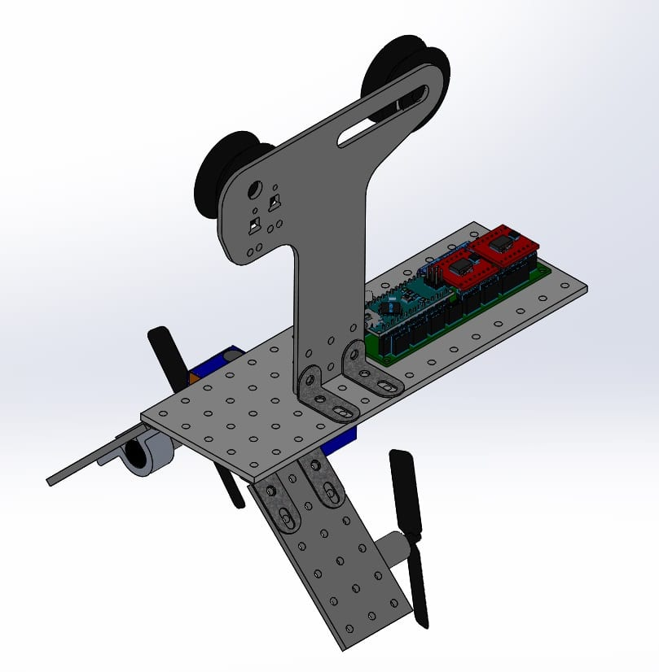

Building my own AEV ws a process that taught me a lot about the research and development process and technical communications. For this project, every group was given the same base model of AEV, which rode on a rail and was propelled by two propellors.
Our job was to change the design to run as quickly and efficiently as possible. Our group developed a large set of criteria that we could test to determine their impact on these factors such as number of propellors, size of propellors, orientaion of the motors, among many others.
For each criteria, we tested and documented the results. By the end of the semester, we had developed an AEV that didn't look extremely different from the original, but the minor changes we made led to drastic improvements in performance. Our AEV finished with the best energy efficiency in the class.
In addition to developing the AEV, we had to simultaneously maintain a website to comminicate to our professor the results of our analysis. If you would like to look, that webiste is linked here (group I):
Click here